Memoria de la Feria Tecnológica
Presentación oficial de los proyectos y competencias técnicas de la sección
Presentación oficial de los proyectos y competencias técnicas de la sección
Diagnóstico de fallas, ensamblaje de hardware, optimización de sistemas y reparación de periféricos.
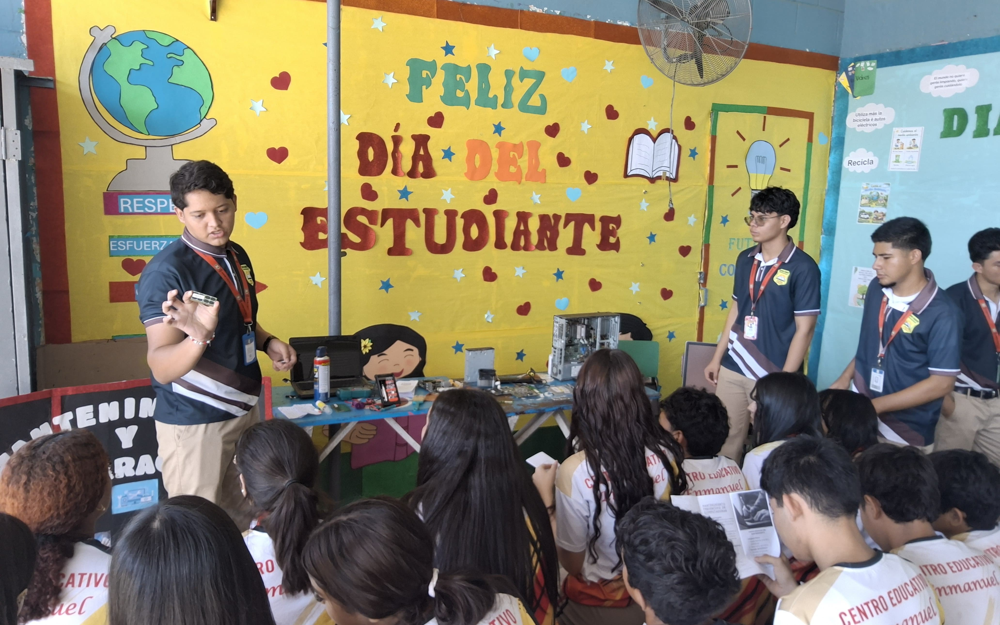
El mantenimiento ayuda a que la computadora funcione correctamente, evita daños y mejora la velocidad del sistema. También permite detectar problemas antes de que se empeoren.
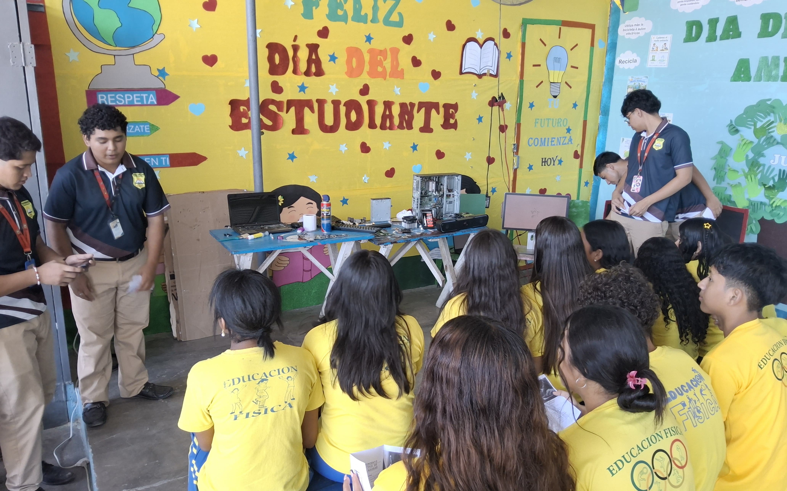
El mantenimiento preventivo son todas las acciones proactivas que se realizan antes de que el equipo presente fallos, buscando reducir la probabilidad a averías. Se dividen en dos vertientes.
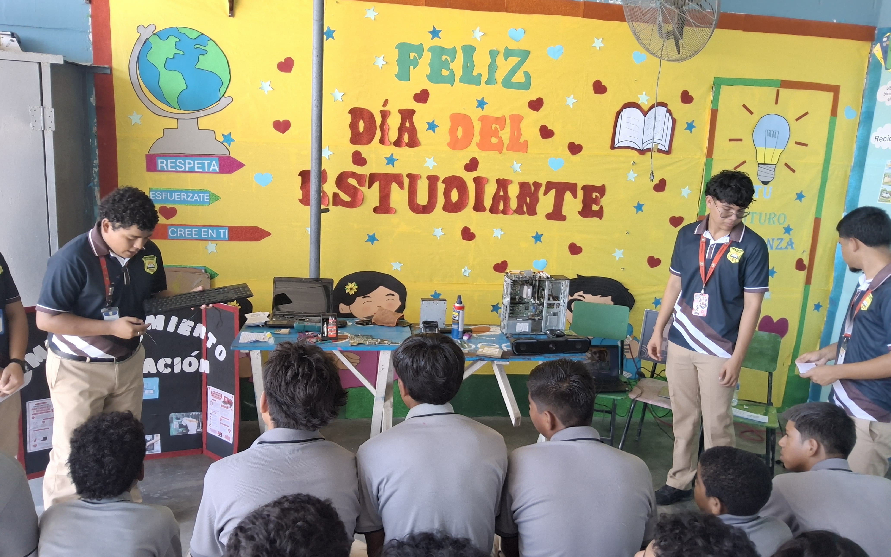
Se aplica cuando la computadora ya presenta un fallo, problema técnico o bajo rendimiento. Su objetivo es diagnosticar y reparar o sustituir la pieza de hardware dañada o el programa que está generando conflicto.
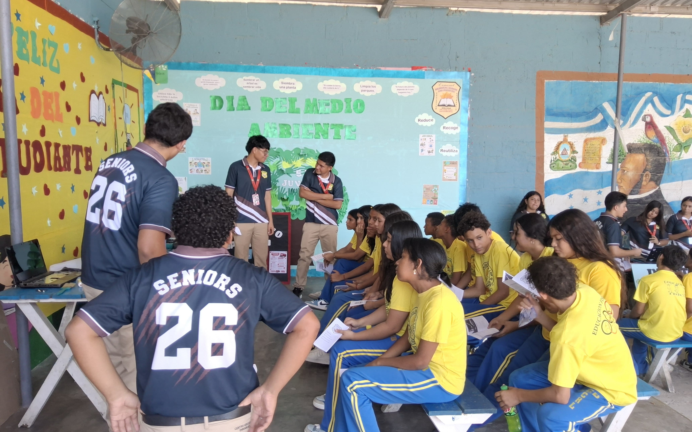
La reparación de la computadora consiste en diagnosticar y solucionar fallas de hardware y software para que el equipo funcione correctamente.
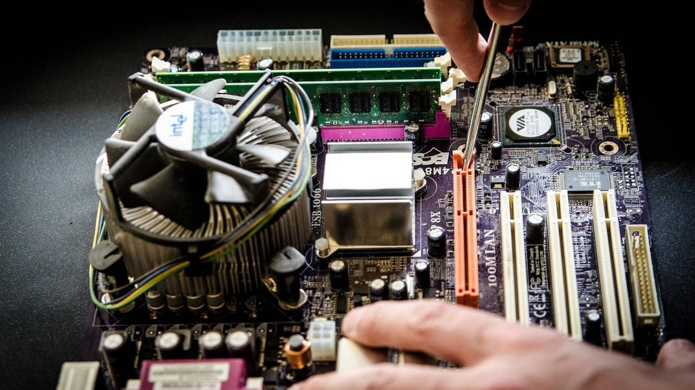
1. Cambio de disco duro. 2. Instalación de Windows. 3. Cambio de memoria RAM. 4. Reparación de teclado o pantalla. 5. Eliminación de virus.
Diseño, topologías, cableado estructurado, ponchado de conectores y configuración de redes locales.
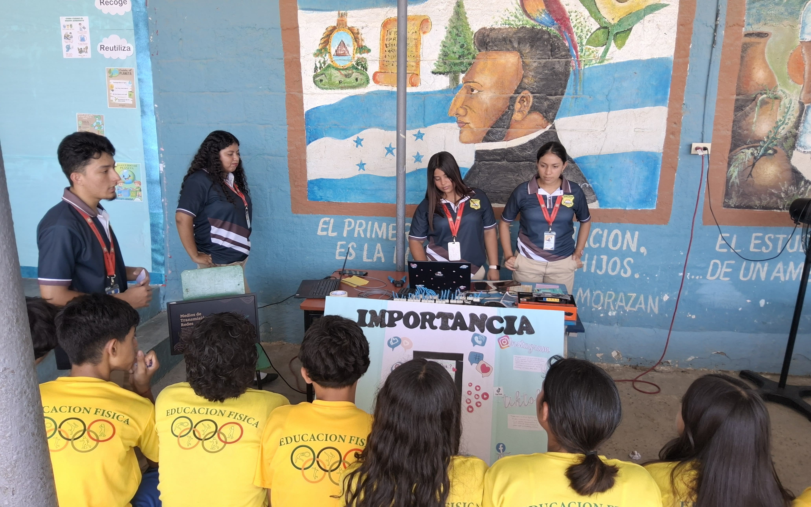
Una red informática es un sistema de dispositivos interconectados —como ordenadores, móviles, servidores, routers o aplicaciones— que comparten información y recursos mediante protocolos de comunicación, a través de conexiones físicas o inalámbricas.
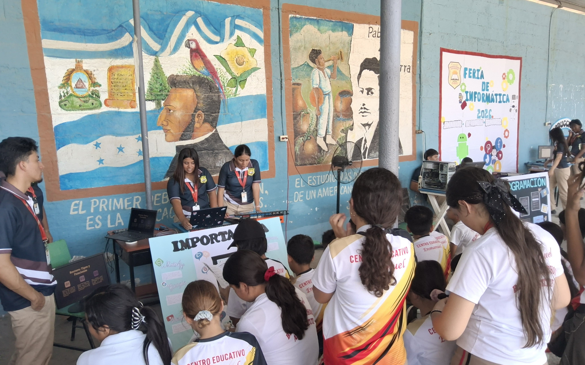
Existen diferentes tipos de redes, como las LAN, que funcionan en áreas pequeñas; las WAN, que abarcan grandes distancias; y las WLAN, que utilizan conexiones inalámbricas.
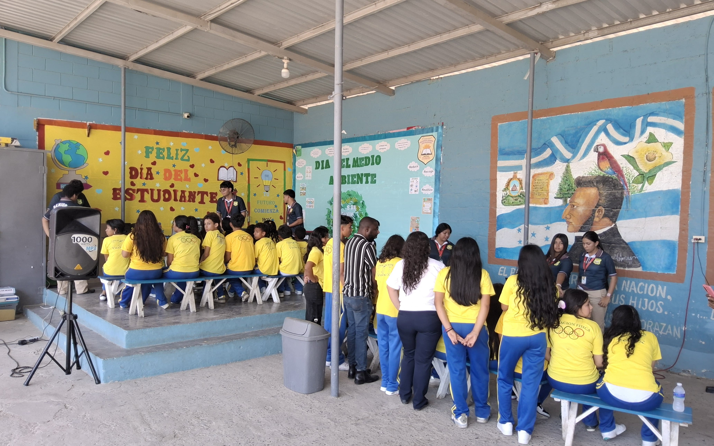
Para transmitir datos se emplean medios guiados, como el cable de par trenzado y la fibra óptica, y medios no guiados, como WiFi, Bluetooth y microondas, cada uno con ventajas y desventajas según su velocidad, seguridad y movilidad.
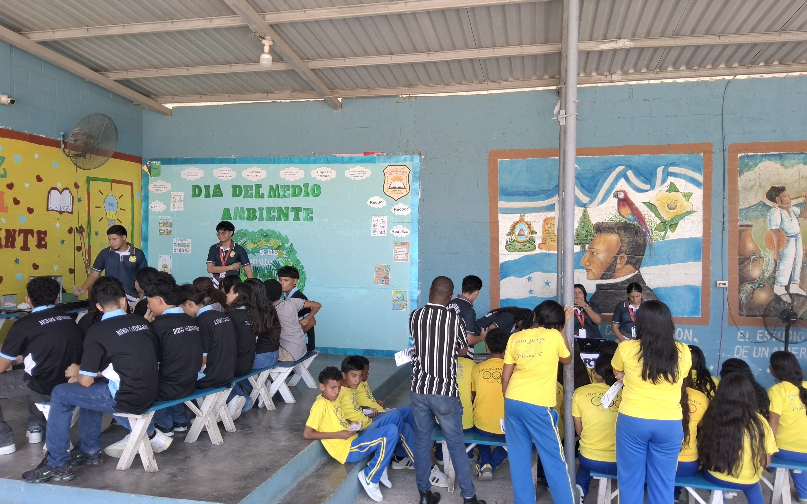
Entre los equipos de conectividad destacan el módem, que permite la comunicación con el proveedor de Internet, y los diferentes tipos de routers, encargados de dirigir el tráfico de datos y conectar redes cableadas o inalámbricas. También son importantes las tarjetas de red, los puertos Ethernet RJ-45 y los patch panels, que facilitan la organización del cableado.
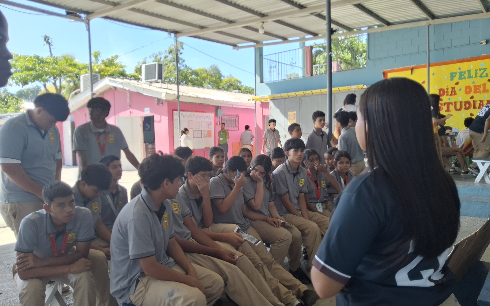
Las redes modernas ofrecen velocidades cada vez mayores, desde 10 Mbps hasta 100 Gbps, siendo Gigabit Ethernet uno de los estándares más utilizados. Finalmente, los estándares T568A y T568B establecen el orden correcto de los cables en los conectores RJ-45 para garantizar una conexión estable y eficiente.
Desarrollo de software, algoritmos lógicos, interfaces gráficas y automatización de procesos mediante código.
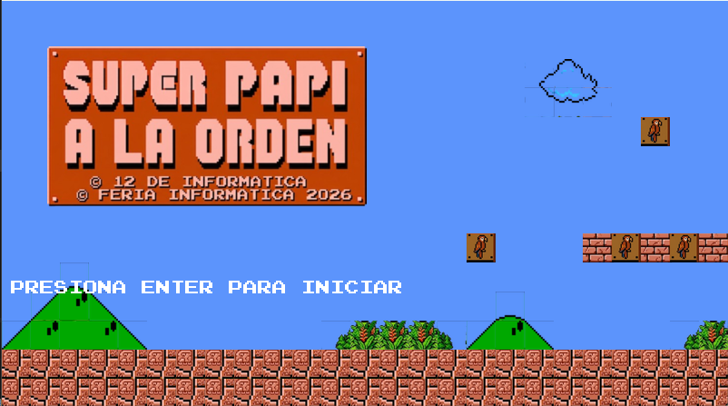
Es el proceso de diseñar y escribir instrucciones que una computadora puede entender y ejecutar. Estas instrucciones, conocidas como código, permiten que las máquinas realicen tareas específicas desde cálculos simples hasta operaciones complejas como gestionar bases de datos o controlar dispositivos inteligentes.
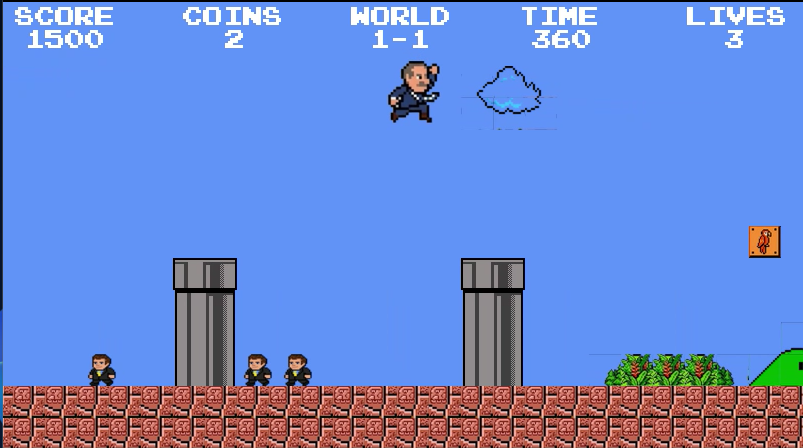
La programación requiere un lenguaje establecido que permita escribir instrucciones comprensibles para la computadora. Un lenguaje de programación es un conjunto de reglas, símbolos y sintaxis que permite a los programadores comunicarse con una computadora para darle instrucciones y realizar tareas específicas. Actúa como un puente entre los humanos y las máquinas.
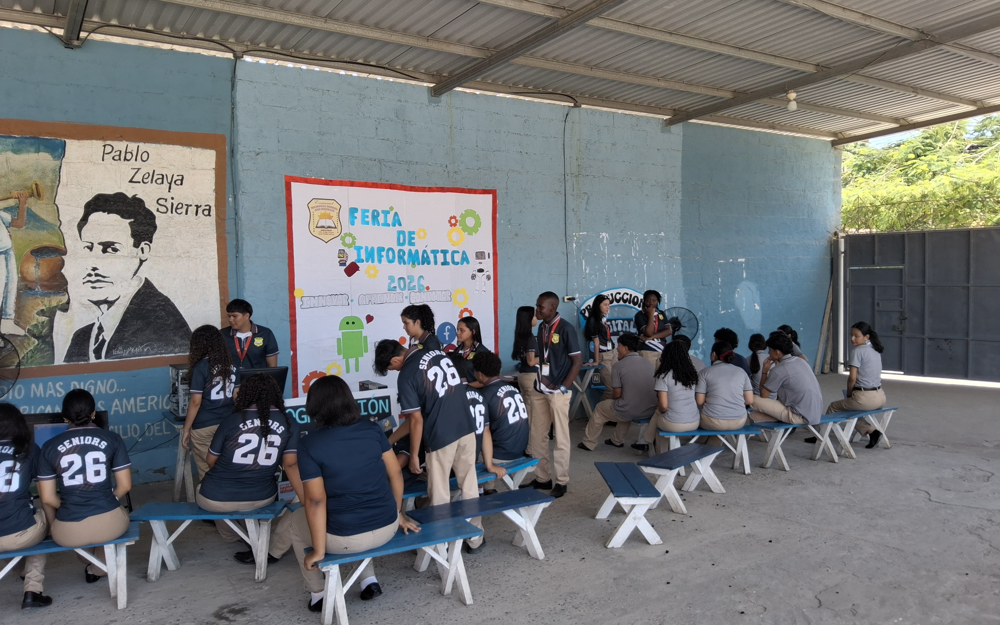
El proyecto consiste en una recreación del clásico videojuego Mario Bros, en este caso, Papi A La Orden como protagonista, entre otros personajes y cosas icónicas de nuestro país. El juego incluye: Nasry Asfura como Protagonista. Enemigos Icónicos como Salvador Nasralla, Eduardo Maldonado. Monedas, en este caso Lempiras. Mapa personalizado.
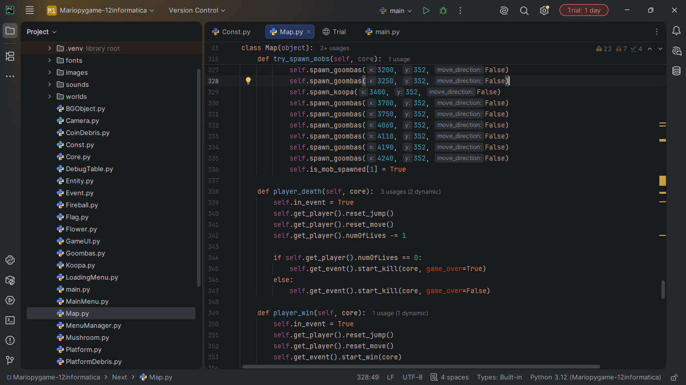
Python, es el lenguaje principal utilizado para desarrollar el juego. Se utiliza para controlar toda la lógica, movimientos, eventos y funcionamiento general. Pygame, es una librería de Python especializada en el desarrollo de videojuegos 2D.
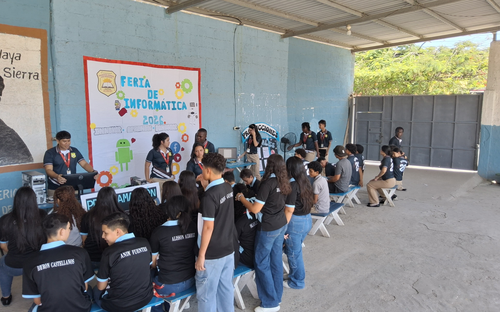
El proyecto combina gráficos, sonidos, animaciones, colisiones y lógica de juego para crear una experiencia interactiva similar al juego original de Mario Bros. Este proyecto es un excelente ejemplo de cómo Python puede utilizarse para desarrollar videojuegos completos y funcionales, aplicando conceptos importantes de programación, diseño de software y desarrollo interactivo.
Diseño gráfico publicitario, edición de audio y video, modelado y creación de contenido multimedia.
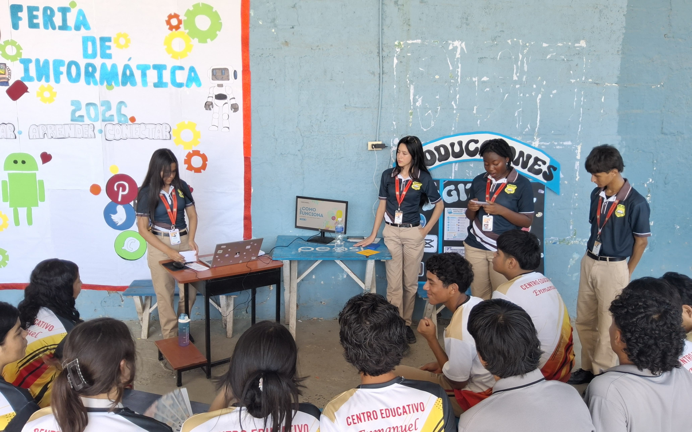
Las producciones digitales son contenidos creados utilizando dispositivos electrónicos y programas informáticos. Su objetivo es comunicar información, entretener, educar o promocionar productos y servicios mediante medios digitales. Estas pueden ser imágenes, videos, presentaciones, páginas web, podcasts, infografías y publicaciones para redes sociales.
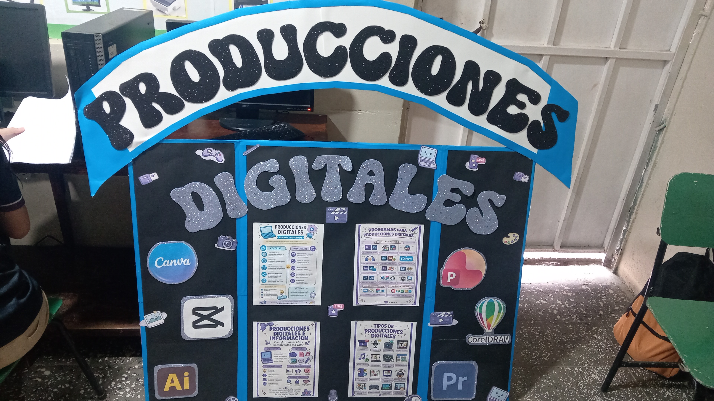
Entre sus ventajas encontramos: • Son fáciles de modificar y mejorar. • Permiten compartir información de forma rápida. • Facilitan el aprendizaje y la comunicación.
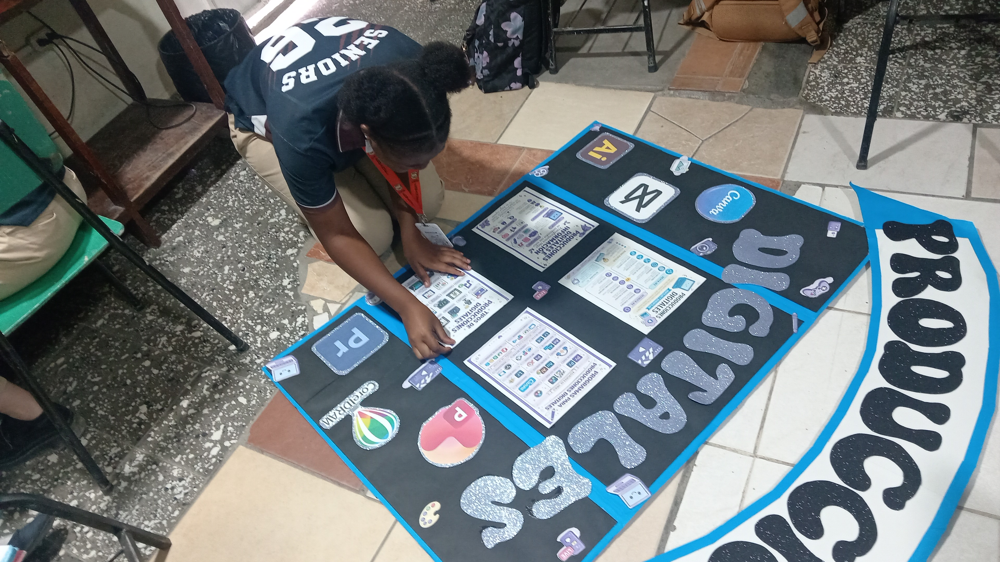
Entre sus desventajas encontramos: •La información puede ser copiada o modificada sin permiso. •Algunas herramientas pueden ser costosas. •Requiere acceso a dispositivos y conexión a internet.
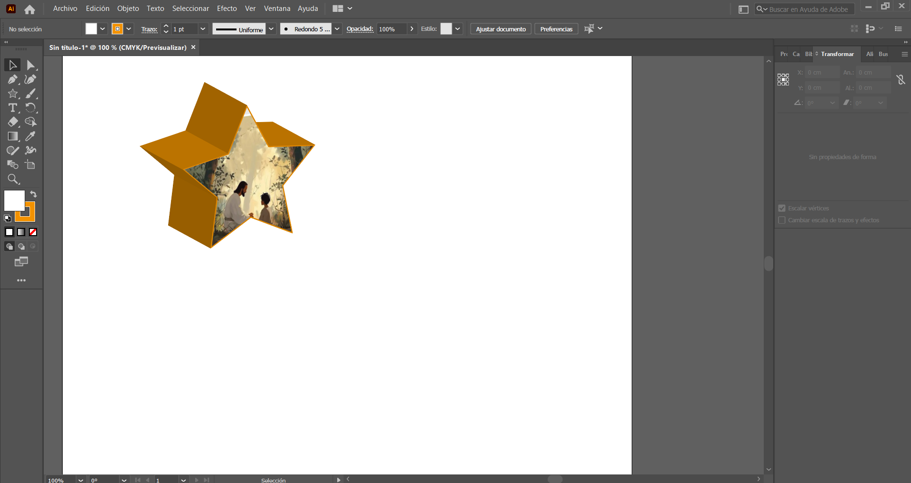
-Canva: programa para realizar presentaciones, infografías, afiches, publicaciones para redes sociales, etc. -Adobe Illustrator: herramienta profesional para editar fotografías, crear ilustraciones digitales, entre muchas funciones más. -Capcut: aplicación para editar videos de manera sencilla, permite agregar efectos, música, transiciones, subtítulos y filtros.
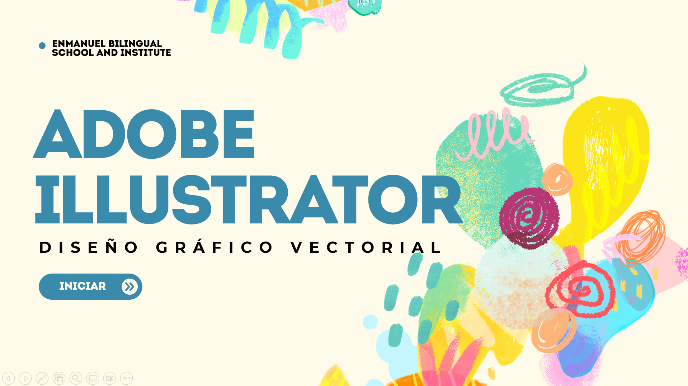
Las producciones digitales son importantes porque facilitan la comunicación, el aprendizaje y la difusión de información. Además, permiten expresar ideas de forma creativa, apoyar la educación, promover negocios y conectar personas de diferentes lugares del mundo de manera rápida y efectiva.